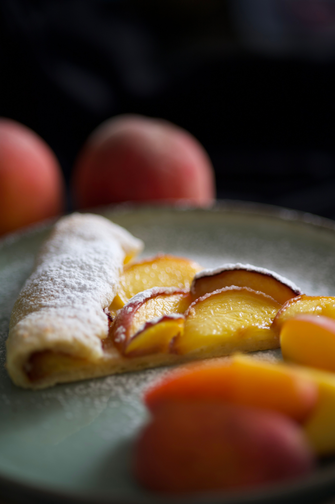

Peach Pie the Old Fashioned Two Crust Way
Home

Description
Old-fashioned peach pie made with two crusts, fresh peaches, and simple ingredients. It's great during the summer peach season.
Ingredients
- 1 (14.1 ounce/2 count) package ready-to-bake pie crust pastry for a double-crust 9-inch pie
- 1 egg, beaten
- 5 cups sliced peeled peaches
- 2 tablespoons lemon juice
- 1 cup white sugar
- ½ cup all-purpose flour
- ½ teaspoon ground cinnamon or to taste
- ¼ teaspoon ground nutmeg or to taste
- ¼ teaspoon salt
- 2 tablespoons butter
Steps
- Gather all ingredients. Preheat the oven to 450 degrees F (220 degrees C).
- Line the bottom and sides of a 9-inch pie plate with 1 pie crust; lightly brush crust with egg to prevent dough from becoming soggy. Set aside remaining 1 crust.
- Place peaches in a large bowl; gently toss with lemon juice.
- Combine sugar, flour, cinnamon, nutmeg, and salt in a separate bowl; pour over peaches and mix until combined.
- Pour peach filling into the prepared pie crust; dot with butter.
- Cover filling with remaining 1 pie crust; flute edges to seal or use a fork dipped in egg to press them down.
- Brush remaining egg on top crust; cut several slits in top crust to allow steam to escape.
- Bake in the preheated oven for 10 minutes. Reduce the oven temperature to 350 degrees F (175 degrees C); continue baking until crust is brown and juice begins to bubble through ventilation slits, 30 to 35 minutes more. If the edges brown too fast, cover them with strips of aluminum foil about halfway through baking.
- Cool pie for 15 minutes before slicing. Enjoy!